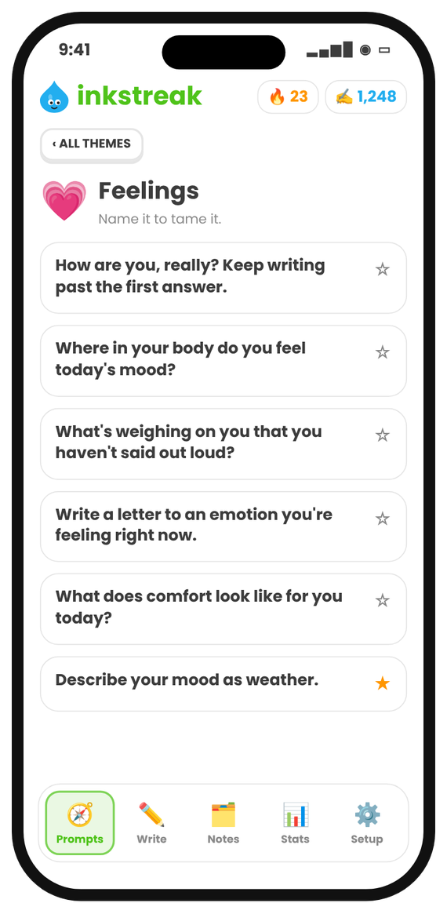

Free list · 228 prompts · 21 themes
Journal prompts for curious minds
Questions about your mind, body, feelings, memories, the people around you, the world — plus astrology and Human Design for the curious. Use them in any notebook, or tap one in Inkstreak and start writing.
Coming to the App Store
👀 Notice
Small observations about right now.
- Describe the room you're in using only sounds.
- What's the first thing you noticed when you woke up today?
- Write about a stranger you saw recently. What story do you imagine for them?
- What colour has shown up most in your day so far?
- Describe your hands as if you were seeing them for the first time.
- What smell reminds you of a specific person?
- What's something in your home you walk past every day but never look at?
- Describe the light outside right now.
- What tiny thing went right today?
- Write down five things you can hear, four you can see, three you can touch.
- What did you eat today, and how did each thing actually taste?
- What's different about your street compared with a year ago?
- Describe the last conversation you overheard.
- What is the weather doing to your mood today?
🧠 Mind & patterns
How you think, and why.
- What thought has been looping in your head this week?
- When did you last change your mind about something important? What changed it?
- What story do you tell yourself when things go wrong?
- Which of your habits do you defend even though you know it doesn't help you?
- What do you avoid thinking about? What happens when you do think about it?
- Describe a time you overreacted. What was really going on underneath?
- What's a belief you inherited and never questioned?
- When do you feel most like yourself? Least?
- What does your inner critic sound like? Write down exactly what it says.
- Now answer your inner critic the way a kind friend would.
- What are you pretending not to know?
- What triggers you in other people that might be true of you too?
- How do you act when you feel unsafe? Where did you learn that?
- What would you do differently if no one was watching?
- Which emotion is hardest for you to show? Why?
💗 Feelings
Name it to tame it.
- How are you, really? Keep writing past the first answer.
- Where in your body do you feel today's mood?
- What are you excited about, even a little?
- What's weighing on you that you haven't said out loud?
- Write a letter to an emotion you're feeling right now.
- What made you laugh recently?
- What are you anxious about? What's the worst, best and most likely outcome?
- When did you last cry? What was it about?
- What does comfort look like for you today?
- What are you grieving — a person, a version of yourself, a plan?
- What made you angry this week? What did the anger want?
- Describe your mood as weather.
🫀 Body
Listen to the thing you live in.
- Scan from head to toe. What is each part telling you?
- How did you sleep, and how is it showing up today?
- What does your body need that you keep postponing?
- When does your body feel strongest?
- Write a thank-you note to a part of your body.
- What do you eat when you're stressed? What are you really hungry for?
- How does your body react before something scary?
- When did you last move just for fun?
- What's your energy like at 10am, 3pm and 10pm?
- What would you change about your day if you trusted your body completely?
- Describe the feeling of being truly rested.
- What did your body do today that you took for granted?
🌿 Nature & surroundings
The world outside your window.
- Go outside for two minutes. Write what you noticed.
- What's a tree, plant or animal you see often? Describe it closely.
- What season are you in — outside, and inside yourself?
- Where do you feel most at peace outdoors?
- Describe the sky right now.
- What does your neighbourhood sound like at night?
- What's a place in nature you return to in your memory?
- How has the climate changed where you live in your lifetime?
- If you could live anywhere on Earth for a year, where and why?
- Write about water — rain, sea, a river, a glass of it.
- What's the most beautiful thing you saw this month?
👥 People
Friends, family, love, everyone in between.
- Who made your week better? Have you told them?
- Describe someone you love without using their name.
- What conversation do you need to have but keep avoiding?
- Who do you miss? What would you say to them now?
- Which friendship has changed the most over the years?
- What did your parents get right? What would you do differently?
- Who do you envy, and what does that tell you about what you want?
- When did someone surprise you with kindness?
- What do people usually misunderstand about you?
- Write about the person you were closest to as a child.
- What boundaries do you need with someone in your life?
- Who would you call at 3am? Why them?
- Describe your ideal Sunday with the people you love.
🧒 Memories
Where you came from.
- Describe your childhood bedroom in detail.
- What's your earliest memory?
- What did you want to be when you grew up? What happened to that dream?
- Write about a smell, song or food that takes you back instantly.
- What's a family story everyone tells? What's the part no one tells?
- Describe a day from your past you'd love to live again.
- What rule from childhood do you still follow?
- Write about your first best friend.
- What were you afraid of as a kid? Are you still?
- What did a teacher say that stuck with you?
- Describe a festival or holiday as you remember it as a child.
- What's something you used to love and stopped doing?
🌱 Growth & habits
Who you're becoming.
- What's one thing you're better at than a year ago?
- What habit would make the biggest difference if you kept it for 30 days?
- What are you learning right now — on purpose or by accident?
- Describe a mistake that taught you something important.
- What are you ready to let go of?
- What would you try if you knew you couldn't fail?
- What does a good day look like for you, hour by hour?
- Where are you holding yourself back?
- What advice would you give yourself from five years ago?
- What does discipline mean to you? What does rest mean?
- What small promise could you keep to yourself today?
- What's a skill you admire in someone else? How could you start learning it?
💼 Work & purpose
What you do, and why it matters.
- What part of your work makes you lose track of time?
- What would you do all day if money didn't matter?
- What problem in the world do you wish you could fix?
- Describe a moment at work you felt proud.
- What drains your energy at work? What could change?
- What does success look like to you — not to anyone else?
- Who do you work best with, and why?
- What's a decision you're putting off?
- What are you building, in work or in life?
- If you had to teach one thing you know, what would it be?
- Write tomorrow's to-do list, then circle the one thing that truly matters.
💰 Money
Your relationship with it.
- What did your family teach you about money, out loud and silently?
- What's the best thing you've ever spent money on?
- What purchase do you regret? Why?
- How much is enough? Try to put a number on it.
- What do you spend on to feel better?
- What would change in your day if money stress disappeared?
- What does being rich mean to you, beyond money?
- Write about a time you felt generous.
- What's one money habit you want to start this month?
🌍 The world
Society, culture, the news, the future.
- What news story has stayed with you this week? Why that one?
- What's something everyone around you believes that you're not sure about?
- Which tradition from your culture do you love? Which would you change?
- What will people in 100 years find strange about how we live now?
- How has technology changed your relationships?
- What community do you belong to? What do you give it?
- If you could ask a world leader one question, what would it be?
- What's a book, film or song that changed how you see the world?
- What does fairness mean to you? Where do you see it missing?
- Describe your town to someone who will never visit.
- What gives you hope about the future?
🔭 Big questions
Philosophy for your notebook.
- What do you think happens when we die? Has your answer changed?
- What makes a life well lived?
- Are you the same person you were ten years ago? What stayed the same?
- Is it better to be happy or to be good?
- What do you know for certain?
- What would you want written about you in 100 years?
- Do you believe in luck, fate, or choice? Give an example from your life.
- What is time to you — a river, a circle, a resource?
- If you could know one truth about the universe, what would you ask?
- What do you worship — not religiously, but in practice?
- Where does your sense of meaning come from?
- What does freedom mean to you right now?
🌙 Dreams & the unconscious
Night-time clues.
- Write down last night's dream, even the fragments.
- What dream do you keep having? What might it be asking of you?
- Pick a symbol from a recent dream. What does it mean to you, not to a dream dictionary?
- Describe a daydream you return to often.
- What do you think about just before you fall asleep?
- If your intuition could speak in one sentence today, what would it say?
- Write about a coincidence that felt meaningful.
- What part of yourself do you only see when you're tired?
- Draw (in words) the house you lived in during a dream.
✨ Astrology
Use the stars as a mirror for reflection.
- Your sun sign is said to describe your core self. What fits you — and what doesn't?
- Your moon sign is linked to emotions and comfort. What actually comforts you?
- Your rising sign is the 'first impression'. How do strangers usually see you?
- Which element do you feel most — fire, earth, air or water? Why?
- During the next Mercury retrograde, what would you like to slow down and review?
- New moon: what do you want to begin this month?
- Full moon: what has come to light or reached its peak lately?
- Saturn is linked to discipline and lessons. What lesson keeps returning in your life?
- Venus is linked to love and values. What do you value most in relationships?
- Mars is linked to drive. What gets you moving — and what stops you?
- Read today's horoscope for your sign. Which line stuck with you, and why?
- If your life were a birth chart, which 'house' needs attention right now?
🧬 Human Design
Reflect on your type, strategy and authority.
- Your Human Design type (Generator, Projector, Manifestor, Reflector…) — which parts ring true for you?
- Generators are said to follow a gut 'yes'. What did your gut say yes to this week?
- Projectors wait for recognition. When did you last feel truly seen?
- Manifestors are told to inform before acting. Who would you like to keep in the loop?
- Reflectors are said to sample the energy around them. Which place or person changes your mood most?
- What does your 'not-self' feeling look like — frustration, bitterness, anger, disappointment?
- Your authority is how you're meant to decide. How did you make your last big decision?
- Where do you spend energy that isn't really yours to spend?
- When do you feel most aligned — rested, clear and energised at once?
- Which open centre in your chart do you relate to? What do you absorb from others?
🔮 Intuition & symbols
Tarot, signs, gut feelings.
- Pull a tarot card (or imagine one). What story does it tell about your week?
- What sign have you been waiting for? What would you do if it came today?
- When did your gut feeling turn out to be right?
- Pick a number that keeps appearing for you. Where have you seen it?
- If your life had a symbol right now, what would it be?
- Describe a ritual — big or tiny — that grounds you.
- What would your wisest future self whisper to you today?
- Choose a colour for this month. Why that one?
🙏 Gratitude
Three good things, and more.
- Three good things from today, however small.
- Who are you grateful for that you rarely thank?
- What's something you have now that you once wished for?
- What simple pleasure do you never get tired of?
- Write about a hard time that gave you something good.
- What about your body are you thankful for today?
- Which place are you grateful exists?
- What modern convenience would you miss most?
- Describe a meal you're grateful for.
🎨 Creativity
Play with words.
- Write a six-word story about your day.
- Describe your morning as the opening of a novel.
- Write a letter from your phone to you.
- Invent a holiday. What do people do on it?
- Write a poem about the last thing you ate.
- Describe a colour to someone who can't see.
- Write the conversation two objects on your desk would have.
- Start with 'The door was already open…' and keep going for 5 minutes.
- Rewrite a bad moment from this week as a comedy.
- What would your life's soundtrack be? List the songs and why.
- Describe your city in the year 2080.
🕰️ Future you
Plans, hopes, letters forward.
- Write a letter to yourself one year from today.
- Describe an ordinary day five years from now.
- What do you want to be known for?
- What's one thing you'll be glad you started today?
- If this year had a title, what would you want it to be?
- What would make next month feel like a good month?
- Who do you want to become? What would that person do today?
- What fear do you hope future you has outgrown?
- List ten things you want to do before you die.
🌧️ Hard days
For when it's heavy. Just let it out.
- Write everything you're feeling without fixing it. Just let it out.
- What's the hardest part of today? What's one thing that helped, even slightly?
- What would you say to a friend going through exactly this?
- What do you need right now — rest, help, space, or someone to listen?
- List what's in your control and what isn't.
- What has got you through hard times before?
- Write the thing you can't say to anyone. You don't have to keep it.
- What's one gentle thing you can do for yourself in the next hour?
📍 Places & travel
Where you've been and where you'd go.
- Describe the best trip you've ever taken, one moment at a time.
- What place changed you?
- Write about getting lost somewhere.
- What's a place you'll never go back to? Why?
- Where would you go tomorrow if you could?
- What does 'home' mean — a place, people, a feeling?
- Describe a street from your past so someone could walk it.
- What's the most interesting conversation you had with a stranger while travelling?
Questions
How do I use journal prompts?
Pick one that catches your eye and write for five minutes without stopping. Don't edit — just follow the thought. If a prompt doesn't fit today, skip it.
How often should I journal?
A little every day beats a lot once a week. Even three sentences keep the habit alive — that's why Inkstreak counts a streak, not a word goal.
Are the astrology and Human Design prompts predictions?
No. They use astrology and Human Design as a mirror for reflection — questions to help you notice what's true for you.

Write a little every day.
7 days free, then $7.99/month or $49.99/year. No account. No ads.
Launching on the App Store very soon. Follow along: get an email when it's out.